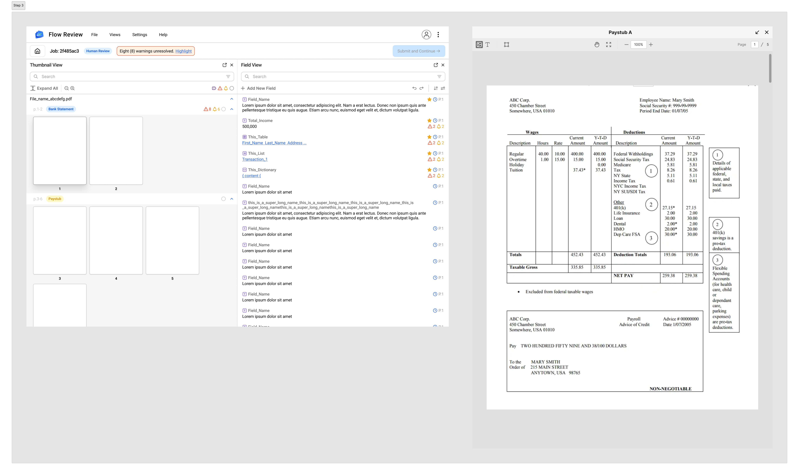
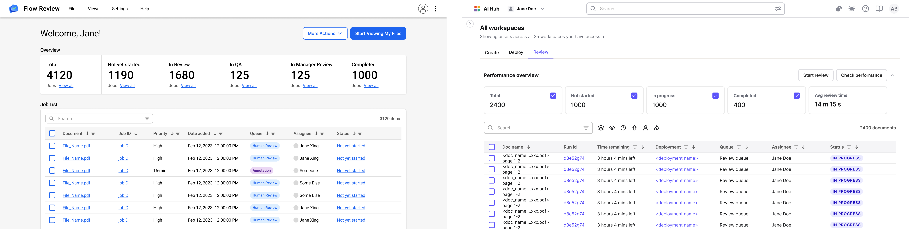
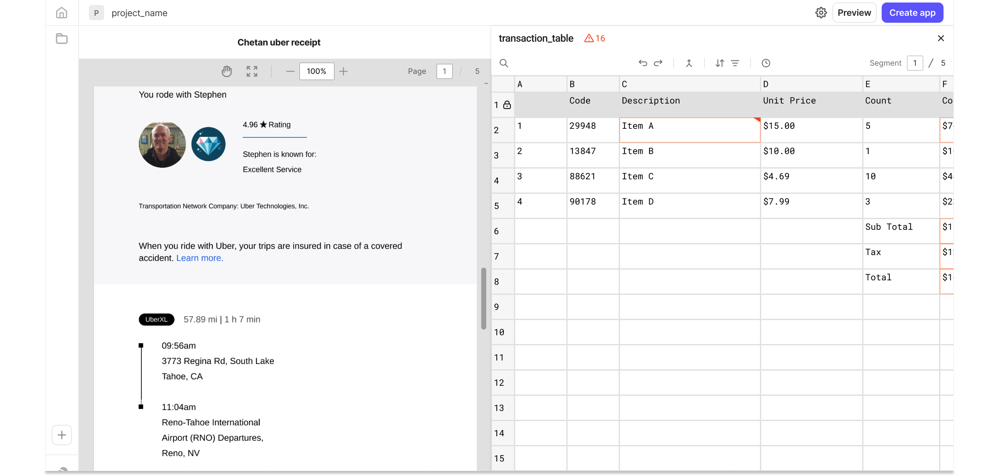

Overview
Instabase builds workflow automation software that processes large volumes of unstructured documents for enterprise customers. Human review is the quality gate in that pipeline — reviewers correct extraction errors from the model, annotate documents, and build the ground-truth datasets that directly improve model performance.
I was asked to update the table editing experience. After an on-site contextual inquiry at a major enterprise client, the work became a redesign of the entire review workflow — a direction later adopted as the standard when Instabase launched its next-generation platform, AI Hub.
The Challenge
Human review is the backbone of AI quality — but the tooling hadn't kept pace
The tool hadn't kept up with how enterprise teams had scaled their operations. Reviewers needed to edit table cells, work within governance and permission constraints, and select text across documents — none of which the existing interface supported well.
But the table UI I was asked to fix was a symptom, not the cause. The ask assumed a single-screen, single-tool problem — the actual workflow was neither.
The Discovery
I asked to go on-site before touching Figma
Rather than starting from the ticket as written, I observed reviewers at a major enterprise client in their actual working environment. Seeing the real workspace — not the workflow as described in a spec — surfaced problems no ticket or support log had captured.
Reframing the problem
From "update a UI component" to "redesign a workflow"
| Original scope | Expanded scope |
|---|---|
| Update table annotation UI | Redesign the full review experience |
| — | Add dual-monitor support |
| — | Unify annotation + review into one UI |
| — | Build a manager view |
I brought these back to the PM as observations rather than opinions. The dual-monitor workaround and the manager visibility gap were concrete enough that the case for expanding scope made itself.
The Design
Design decision 1 — one interface for annotation and review
Annotation and review had been two tools because of how the system was built internally, not because the work was different. I unified them into a single interface so reviewers no longer switched tools mid-task — and so the two engineering teams behind them shared one system for building rules and surfacing them to reviewers.
The direction held: it was later adopted as the standard when Instabase launched AI Hub with a single unified review interface.
Design decision 2 — designing for the actual workspace, not an assumed one
Reviewers worked across two monitors; the UI was built for one window. The redesign let panels pop out as separate tabs and drag to a second monitor, so the document preview stayed visible at all times while reviewers worked in the field view.
Full multi-panel pop-out carried real engineering cost, so I scoped it with engineering and prioritized the document preview first — the panel reviewers used most. Reviewers benefited from day one instead of waiting on a fully general solution.

Design decision 3 — making the invisible visible
Coordination happened entirely outside the tool: team leads couldn't assign priority or track review work, and had no shared view of queue status or workload. The redesign introduced three capabilities they'd been working around informally — queue assignment, workload visibility, and escalation for high-priority or problematic documents.
This shifted review management from a reactive, ad hoc process into something that could be planned, monitored, and optimized.

Design decision 4 — reducing cognitive load with familiar patterns
The original tool had no table editing at all — reviewers could see table data but couldn't correct individual cells, which made errors on tabular documents nearly impossible to resolve. The redesign adopted a spreadsheet-style interaction model familiar from Excel and Google Sheets. For a non-technical user base handling high document volumes, lower interface learning cost translates directly into faster onboarding and fewer errors.

The Impact
A foundation that scaled beyond the MVP
Reviewers described the unified interface as a significant improvement — it let them focus on the quality of their review rather than on fighting the tool. The stronger validation came later, when the unified direction was adopted as the platform standard for AI Hub.
What I don't have is numbers. We shipped without instrumenting adoption or throughput, so impact is hard to state precisely after the fact. Completion time and average review rate were the metrics that mattered here — both have a direct line to reviewer productivity.
Longer-term
Two years later: human review is more complex than we thought
What began as a single review step evolved into a layered system spanning extraction correction, expert review, and business-decision checkpoints — the same "human-in-the-loop is universal" pattern that later showed up independently in my unstructured data flow research.
Looking back, the thing I'd push harder on isn't process — it's positioning. I treated human review as an accuracy stopgap when it was already becoming a strategic differentiator.